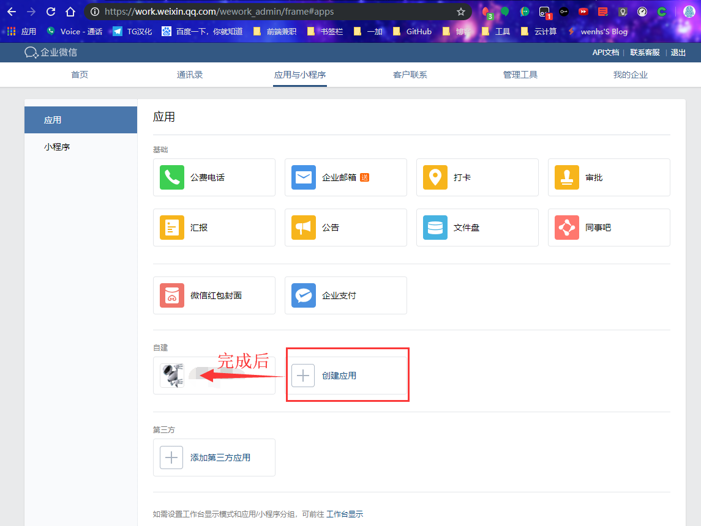
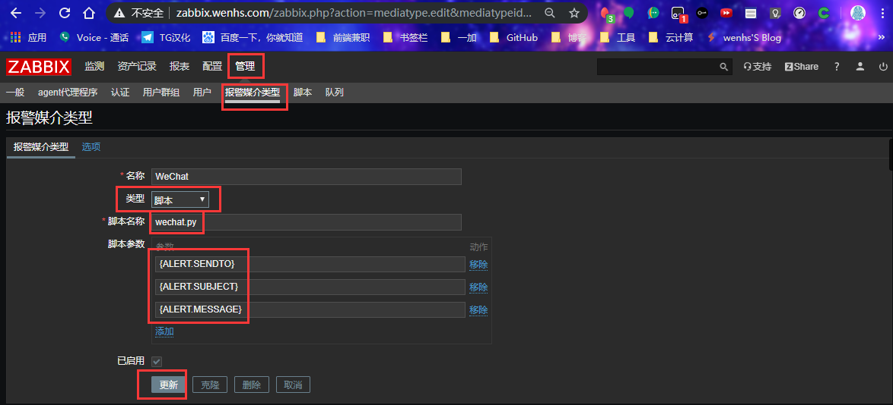
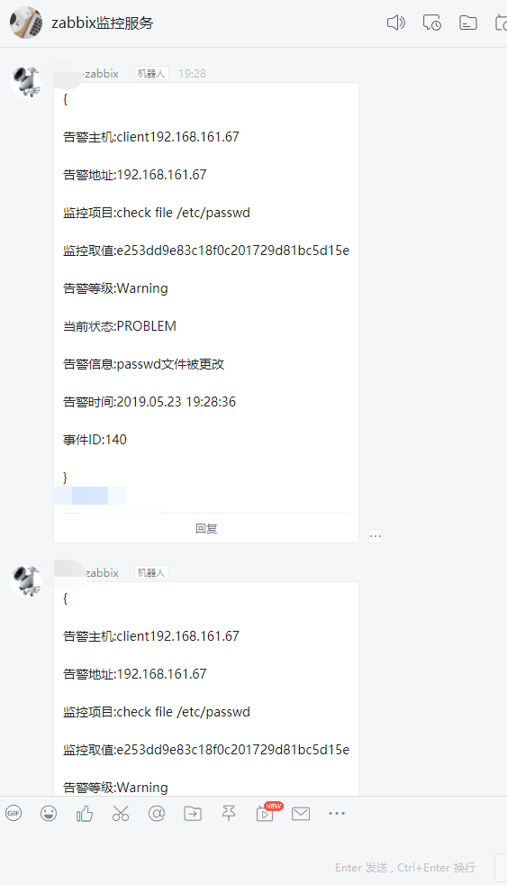

zabbix之微信钉钉告警

文章目录
一,zabbix配置WeChat报警
写先声明:本人完全python小白,脚本内容有许多看不懂,这都不影响接下来的操作,写这个就是为了复习记忆,也多谢官网推荐的,用于WeChat报警的python脚本,主要是图文教程,配合作者火星小刘的README和脚本,更容易学习.
注意事项等,作者火星小刘的README中有,下面开始教程正文
需要具备一下条件
- 注册微信企业号 点击注册 或 注册企业号微信 [点击注册](https://work.weixin.qq.com/）

信息不要求,无需认证
安装组件
- 安装方法一
1 2 3 4 |
yum -y install python-pip python-wheel python-setuptools yum upgrade python-setuptools pip install requests pip install --upgrade requests |
- 安装方法二
1 2 3 4 5 |
wget https://pypi.python.org/packages/c3/38/d95ddb6cc8558930600be088e174a2152261a1e0708a18bf91b5b8c90b22/requests-2.18.3.tar.gz tar zxvf requests-2.18.3.tar.gz cd requests-2.18.3 python setup.py build python setup.py install |
下载安装脚本
1 2 3 4 |
git clone https://github.com/X-Mars/Zabbix-Alert-WeChat.git cp Zabbix-Alert-WeChat/wechat.py /etc/zabbix/alertscripts chmod +x /usr/local/etc/scripts/wechat.py chown zabbix.zabbix /usr/local/etc/scripts/wechat.py |
微信企业号设置
通讯录设置
登陆微信企业号控制台
点击左侧“通讯录”，新增部门（技术部）与子部门（运维部），并添加用户

点击（运维部）后方的三角，修改部门，记录部门ID

创建应用
点击左侧“应用中心”，新建消息型应用，应用名称“自己随便取”

“应用可见范围”，添加刚刚新建的子部门（运维部）

点击“自己随便取的应用”，记录应用ID
应用权限设置
点击左侧“设置”，权限管理，新建普通管理组，名称填写“zabbix报警组”
点击修改“通讯录权限”，勾选（技术部）后方的管理
点击修改“应用权限”，勾选刚刚创建的“zabbix报警”
点击刚刚创建的“zabbix报警组”，记录左侧的CorpID与Secret(个人创建的没有,问题不大)
收集微信相关信息
- 记录应用ID

- 记录CorpID与Secret

- 记录子部门（运维部）ID

这时,就可以填写脚本却的参数了:
1 2 3 4 5 6 7 8 9 10 11 12 13 14 15 16 17 18 19 20 21 22 23 24 25 26 27 28 29 30 31 32 33 34 35 36 37 38 39 40 41 42 43 44 45 46 47 48 49 50 51 52 53 54 55 56 57 58 59 60 61 62 63 64 65 66 67 68 69 70 71 72 73 74 |
#!/usr/bin/python2.7
#_*_coding:utf-8 _*_
#auther:火星小刘(出自这位大佬的GitHub库,链接在开头)
import requests,sys,json
import urllib3
urllib3.disable_warnings()
reload(sys)
sys.setdefaultencoding('utf-8')
def GetTokenFromServer(Corpid,Secret):
Url = "https://qyapi.weixin.qq.com/cgi-bin/gettoken"
Data = {
"corpid":Corpid,
"corpsecret":Secret
}
r = requests.get(url=Url,params=Data,verify=False)
print(r.json())
if r.json()['errcode'] != 0:
return False
else:
Token = r.json()['access_token']
file = open('/tmp/zabbix_wechat_config.json', 'w')
file.write(r.text)
file.close()
return Token
def SendMessage(User,Agentid,Subject,Content):
try:
file = open('/tmp/zabbix_wechat_config.json', 'r')
Token = json.load(file)['access_token']
file.close()
except:
Token = GetTokenFromServer(Corpid, Secret)
n = 0
Url = "https://qyapi.weixin.qq.com/cgi-bin/message/send?access_token=%s" % Token
Data = {
"touser": User, # 企业号中的用户帐号，在zabbix用户Media中配置，如果配置不正常，将按部门发送。
"totag": Tagid, # 企业号中的标签id，群发使用（推荐）
"toparty": Partyid, # 企业号中的部门id，群发时使用。
"msgtype": "text", # 消息类型。
"agentid": Agentid, # 企业号中的应用id。
"text": {
"content": Subject + '\n' + Content
},
"safe": "0"
}
r = requests.post(url=Url,data=json.dumps(Data),verify=False)
while r.json()['errcode'] != 0 and n < 4:
n+=1
Token = GetTokenFromServer(Corpid, Secret)
if Token:
Url = "https://qyapi.weixin.qq.com/cgi-bin/message/send?access_token=%s" % Token
r = requests.post(url=Url,data=json.dumps(Data),verify=False)
print(r.json())
return r.json()
if __name__ == '__main__':
User = sys.argv[1] # zabbix传过来的第一个参数{ALERT.SENDTO}
Subject = str(sys.argv[2]) # zabbix传过来的第二个参数{ALERT.SUBJECT}
Content = str(sys.argv[3]) # zabbix传过来的第三个参数{ALERT.MESSAGE}
Corpid = "企业Id" # CorpID是企业号的标识
Secret = "在应用里面" # Secret是管理组凭证密钥
Tagid = "zabbix" # 通讯录标签ID(这个没搞懂,随便写的通讯录标签名)
Agentid = "自己修改" # 应用ID
Partyid = "2" # 部门ID,如果是1,则是技术部,那么技术部下面的,都可以收到告警,显然不合适
Status = SendMessage(User,Agentid,Subject,Content)
print Status |
zabbix设置
- 添加示警媒介

管理-->示警媒介
名称填写微信报警，类型选择脚本，脚本名称填写wechat.py
管理-->用户-->示警媒介
类型选择微信报警，收件人添加微信企业号通讯录内的，用户帐号

添加到动作,具体方法,如下图所示

测试一:

结果一:

测试二:手动触发
结果二:

二,钉钉告警
下载钉钉后创建群组
添加机器人实现报警
添加完成
创建告警脚本
1 2 3 4 5 6 7 8 9 10 11 12 13 14 15 16 17 18 19 20 21 22 23 24 25 26 27 28 29 30 31 32 33 34 35 36 37 38 39 40 41 42 43 44 45 46 47 48 49 50 51 52 53 54 55 56 57 58 59 60 61 62 63 64 |
简洁版一:
#!/usr/bin/python
# -*- coding: utf-8 -*-
import requests
import json
import sys
import os
headers = {'Content-Type': 'application/json;charset=utf-8'}
#api_url后跟告警机器人的webhook
api_url = "上图中的webhook的链接"
def msg(text):
json_text= {
"msgtype": "text",
"text": {
"content": text
},
"at": {
"atMobiles": [
"手机号" #@群里的一个人
],
"isAtAll": False #@所有人为True,
}
}
print(requests.post(api_url,json.dumps(json_text),headers=headers).content)
if __name__ == '__main__':
text = sys.argv[1]
msg(text)
脚本二:
#!/usr/bin/env python
#coding:utf-8
#zabbix钉钉报警
import requests,json,sys,os,datetime
webhook="https://oapi.dingtalk.com/robot/send?access_token=8ea7abd3db4b49a9e898e911920d4899c526ae78f5794c977cfca8b6c0b77fdf"
user=sys.argv[1]
text=sys.argv[3]
data={
"msgtype": "text",
"text": {
"content": text
},
"at": {
"atMobiles": [
user
],
"isAtAll": False
}
}
headers = {'Content-Type': 'application/json'}
x=requests.post(url=webhook,data=json.dumps(data),headers=headers)
if os.path.exists("/tmp/ding.log"):
f=open("/tmp/ding.log","a+")
else:
f=open("tmp/ding.log","w+")
f.write("\n"+"--"*30)
if x.json()["errcode"] == 0:
f.write("\n"+str(datetime.datetime.now())+" "+str(user)+" "+"发送成功"+"\n"+str(text))
f.close()
else:
f.write("\n"+str(datetime.datetime.now()) + " " + str(user) + " " + "发送失败" + "\n" + str(text))
f.close()
|
赋予执行权限
1 2 3 |
chown zabbix.zabbix ding.py chmod +x ding.py |
测试
1 2 3 4 |
[root@zabbix scripts]# ./ding.py 这是测试
{"errcode":0,"errmsg":"ok"}
[root@zabbix scripts]# ./ding.py 这是测试
{"errcode":0,"errmsg":"ok"} |

如果想知道消息内容中宏，可参考官网宏的使用场景
1 2 3 4 5 6 7 8 9 10 11 12 13 14 15 16 17 18 19 20 21 22 23 24 25 26 27 28 29 30 31 32 33 34 35 36 37 38 39 |
服务器:{HOST.NAME}发生: {TRIGGER.NAME}故障!
{
告警主机:{HOST.NAME}
告警地址:{HOST.IP}
监控项目:{ITEM.NAME}
监控取值:{ITEM.LASTVALUE}
告警等级:{TRIGGER.SEVERITY}
当前状态:{TRIGGER.STATUS}
告警信息:{TRIGGER.NAME}
告警时间:{EVENT.DATE} {EVENT.TIME}
事件ID:{EVENT.ID}
}
服务器:{HOST.NAME}: {TRIGGER.NAME}已恢复!
{
告警主机:{HOST.NAME}
告警地址:{HOST.IP}
监控项目:{ITEM.NAME}
监控取值:{ITEM.LASTVALUE}
告警等级:{TRIGGER.SEVERITY}
当前状态:{TRIGGER.STATUS}
告警信息:{TRIGGER.NAME}
告警时间:{EVENT.DATE} {EVENT.TIME}
恢复时间:{EVENT.RECOVERY.DATE} {EVENT.RECOVERY.TIME}
持续时间:{EVENT.AGE}
事件ID:{EVENT.ID}
}
服务器:{HOST.NAME}: 报警确认
{
确认人:{USER.FULLNAME}
时间:{ACK.DATE} {ACK.TIME}
确认信息如下:
"{ACK.MESSAGE}"
问题服务器IP:{HOSTNAME1}
问题ID:{EVENT.ID}
当前的问题是: {TRIGGER.NAME}
}
分别填在下面3个操作 |

创建报警媒介

脚本二需要3个脚本参数：ALERT.SENDTO ALERT.SUBJECT ALERT.MESSAGE
用户设置媒介(收件人py脚本写死了,这随便写)

脚本二:

添加动作(和上方WeChat方法一样,改一个通知介质),这里就不截屏了
最后测试附图:
